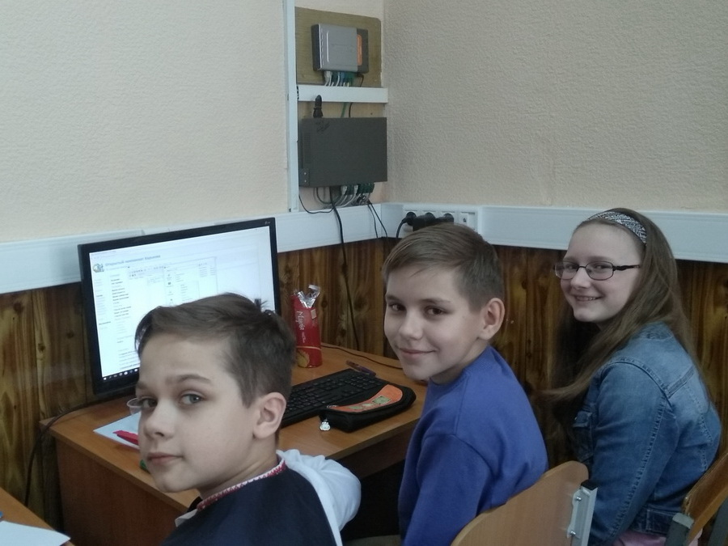

15 квітня 2018 року Молодіжне наукове товариство "Q-BIT" і кафедра Інформаційних систем Харківського національного економічного університету проводили традиційний Відкритий Чемпіонат Харкова зі спортивного програмування, в якому брали участь команди харківських шкіл та ВНЗ. Чемпіонат є регулярним і одним з найбільш масових змагань з програмування в Україні.
Цього року Чемпіонат проводився паралельного в трьох дивізіонах. Учасникам різних дивізіонів були запропоновані різні набори завдань. 57 команд з інших областей і країн розв’язували задачі віддалено (через Інтернет).
Оскільки в правилах написано, що ніяких обмежень на вік, освіту, стать учасників не накладається, П'ЯТЬ команд 6-х класів вирішили взяти участь у другому дивізіоні на рівні з учнями 7-11 класів всієї України. Їм було запропоновано 5 годин на розв’язування 11 завдань.
Команда "METAMORPHOSES" (6-Б клас) успішно здали 4 задачі, набравши 735 хвилин, виявилася на 19 місці серед 57 команд в заліковій категорії "Онлайн-учасники".
Склад команди: Шафоростов Максим, Чащін Дмитро та Скубська Надія.
Команда "DreamTown" (6-А клас) впоралася з 4 задачами, набрала 846 хвилин та посіла 21 місце серед 57 онлайн-команд.
Склад команди: Остафійчук Олександра, Матвійчук Микола та Остапович Всеволод.
Команда "М`9ch" з 4 розв’язаними задачами та 976 хвилинами посіла 22 місце серед 57 онлайн-команд.
Склад команди: Войцеховський Олександр (6-Б), Рейда Микола (6-Б) та Просянніков Дмитро (6-А).
Команди «DarkPengiuin» з єдиним учасником Месюра Діаною (6-В) та «Бідова цегла-трава» з єдиним учасником Сугак Патріком (6-Б) розв’язали на всі 100 по одному завданню.
Рейтингова таблиця розміщена тут